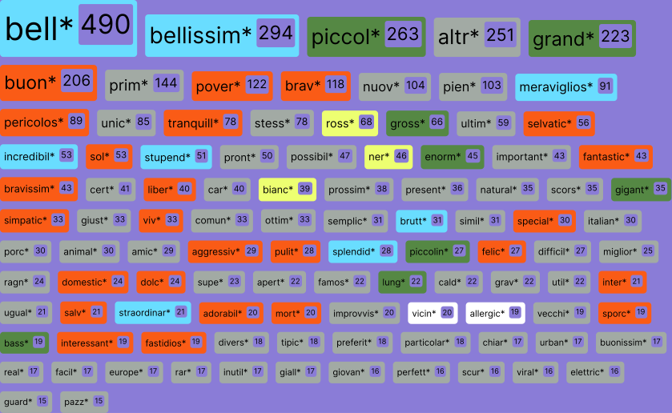

Platform: TikTok
Date: 2024
Bell*, bellissim*
Characterizing urban animals on Italian TikTok through adjectives found
in videos
Benedetta Riccio, Alessandra Facchin, Gabriele Colombo, Michele Mauri
How is urban biodiversity perceived on Italian TikTok?
In contrast to previous studies, such as YouTube comments about North
American mammals which observed
reazioni negative
which observed negative reactions to wild animals in urban environments,
this analyses shows how Italian TikTok users tend to use positive
adjectives, fostering empathy with the depicted animals.
Adjectives infact, offer a quick way to understand the
visual, emotional, and characteristic traits that users most often
associate with each animal.
One notable example is pigeons,
whose reputation has shifted significantly—from being seen as innocent
birds to being labeled "
rats with wings".
On Italian TikTok pigeons receive primarily positive aesthetic
descriptions, suggesting either a shift in perception or a
platform-specific representation that differs from broader cultural
narratives.
This phenomenon suggests not only a possible
change in the collective perception of urban animals, but also how
social media can influence and redefine established cultural narratives,
opening new perspectives on the relationship between city and nature.
The predominance of positive descriptions, even for typically maligned
species, may indicate that TikTok's "fun" culture is reshaping
traditional perceptions of urban animals.
Which adjectives are used to describe animals on the Italian Tiktok?
To answer this question, we collected 2,030 terms from Italian TikTok
videos about urban biodiversity and categorized them into five main
groups.

Adjectives used at least 15 times in the dataset, ordered by frequency.
The color represents the category.
Among these, adjectives related to positive aesthetic qualities are the
most common.


They are followed by the ones describing the size of animals, whether
small or large. We noticed that Italian users tend to emphasize the
dimensions of the animals.


Clearly negative adjectives are less common overall.


Aggettivi utilizzati almeno 15 volte all'interno del dataset, ordinati
secondo la frequenza. Il colore rappresenta la categoria.
When looking among all animals, the most commonly used adjective is
"bello" (beautiful).


However there are some exceptions, such as the seagull, for which the
most frequently used adjective is “povero” (poor)...


...stemming from an Italian internet meme that began in 2021 featuring
the popular song titled "Poor Seagull."
... and the bedbug, which is primarily described by its size (“piccolo,”
small) followed by negative adjectives.
Likely due to the
period of data collection, during which media and social networks
amplified fears about the spread of a bedbug infestation originating in
Paris throughout Europe, including Italy.


Some adjectives are common to all animals, while others are more
distinctive for each animal.
To understand the most distinctive adjective for each animal, we
reordered them using a
TF-IDF
(Term Frequency - Inverse Document Frequency), which isolates the most
important words for each animal from those that are highly frequent
across all animals.


The hawk for example is uniquely associated with the adjective “pilgrim”
Hawk
For squirrels, the color “grigio” (gray) is emphasized. This might be
due to the fact that gray squirrels, although non-native to Italy, are
more widespread and are altering the local ecosystem.
SQUIRREL
Or even, the crow is uniquely described as “intelligente” (smart).
CROW
Notes on data collection and analysis
The data was collected using the
Zeeschuimer, browser extension, which enables systematic data collection while
browsing social media. To minimize the effects of TikTok's
algorithmic personalization, data was collected using a "clean
search browser" and a new TikTok account created specifically for
this study.
The search queries were generated by
combining:
→ A list of animals
(both singular and plural)
→ A
list of Italian cities (regional capitals)
From an
initial dataset of 41,129 videos, only those meeting the following
criteria were selected:
→
Videos clearly depicting urban animals
→
Videos set in an Italian urban context
→
Videos with verifiable geolocation or an identifiable Italian urban
setting
The final dataset consists of 2,648 videos, including:
→
1.600 con città chiaramente identificata
→
1,048 set in an unspecified Italian urban context
The
analysis of adjectives was carried out using the
spaCy natural
language processing library.
The adjectives were unified
according to the following criteria:
→
Unification of plurals and singulars
→
Unification of masculine and feminine forms
→
Retention of basic forms of adjectives